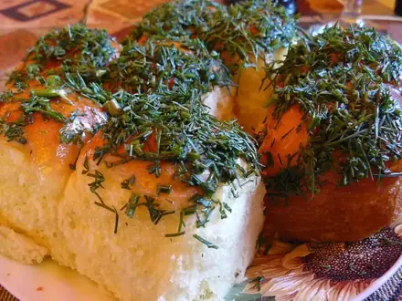

Выпечка и десерты
Шарлотка, блины, сырники и сладкое к чаю. 24 рецептов: у каждого время, калории и БЖУ на порцию, пошаговые инструкции и список покупок
 Шоколадный кекс в кружке в микроволновке7 мин · 506 ккал · Б 15 г · Десерт
Шоколадный кекс в кружке в микроволновке7 мин · 506 ккал · Б 15 г · Десерт Творожный десерт с ягодами без выпечки15 мин · 204 ккал · Б 21 г · Десерт
Творожный десерт с ягодами без выпечки15 мин · 204 ккал · Б 21 г · Десерт- Финиковые конфеты с орехами20 мин · 289 ккал · Б 5 г · Десерт
 Запечённые яблоки с мёдом и орехами35 мин · 119 ккал · Б 1 г · Десерт
Запечённые яблоки с мёдом и орехами35 мин · 119 ккал · Б 1 г · Десерт Пицца на сковороде из готового теста35 мин · 624 ккал · Б 25 г · Выпечка
Пицца на сковороде из готового теста35 мин · 624 ккал · Б 25 г · Выпечка Постное овсяное печенье35 мин · 347 ккал · Б 6 г · Десерт
Постное овсяное печенье35 мин · 347 ккал · Б 6 г · Десерт Овсяное печенье40 мин · 284 ккал · Б 5 г · Выпечка
Овсяное печенье40 мин · 284 ккал · Б 5 г · Выпечка Творожные маффины40 мин · 236 ккал · Б 18 г · Выпечка
Творожные маффины40 мин · 236 ккал · Б 18 г · Выпечка Творожная пасха без выпечки40 мин · 349 ккал · Б 18 г · Десерт
Творожная пасха без выпечки40 мин · 349 ккал · Б 18 г · Десерт Хачапури по-имеретински на сковороде50 мин · 800 ккал · Б 36 г · Выпечка
Хачапури по-имеретински на сковороде50 мин · 800 ккал · Б 36 г · Выпечка Шарлотка с яблоками60 мин · 251 ккал · Б 6 г · Выпечка
Шарлотка с яблоками60 мин · 251 ккал · Б 6 г · Выпечка Самса из слоёного теста60 мин · 478 ккал · Б 17 г · Выпечка
Самса из слоёного теста60 мин · 478 ккал · Б 17 г · Выпечка Киш лорен60 мин · 631 ккал · Б 23 г · Выпечка
Киш лорен60 мин · 631 ккал · Б 23 г · Выпечка Хлебный пудинг60 мин · 474 ккал · Б 15 г · Десерт
Хлебный пудинг60 мин · 474 ккал · Б 15 г · Десерт Постный пирог с яблоками70 мин · 346 ккал · Б 4 г · Выпечка
Постный пирог с яблоками70 мин · 346 ккал · Б 4 г · Выпечка Чак-чак90 мин · 390 ккал · Б 8 г · Десерт
Чак-чак90 мин · 390 ккал · Б 8 г · Десерт Эчпочмак100 мин · 721 ккал · Б 27 г · Выпечка
Эчпочмак100 мин · 721 ккал · Б 27 г · Выпечка Баурсаки110 мин · 347 ккал · Б 9 г · Выпечка
Баурсаки110 мин · 347 ккал · Б 9 г · Выпечка Беляши (перемячи)120 мин · 605 ккал · Б 22 г · Выпечка
Беляши (перемячи)120 мин · 605 ккал · Б 22 г · Выпечка
Пампушки с чесноком120 мин · 347 ккал · Б 8 г · Выпечка Медовик упрощённый120 мин · 485 ккал · Б 8 г · Десерт
Медовик упрощённый120 мин · 485 ккал · Б 8 г · Десерт Хала180 мин · 270 ккал · Б 8 г · Выпечка
Хала180 мин · 270 ккал · Б 8 г · Выпечка Кулич пасхальный300 мин · 432 ккал · Б 9 г · Выпечка
Кулич пасхальный300 мин · 432 ккал · Б 9 г · Выпечка- Рисовая запеканка с яблоком75 мин · 280 ккал · Б 8 г · Десерт
Другие подборки
- Что приготовить из курицы
- Что приготовить из фарша
- Что приготовить из мяса
- Что приготовить из рыбы
- Что приготовить из картошки
- Что приготовить из яиц
- Что приготовить из творога
- Что приготовить из кабачков
- Что приготовить из капусты
- Что приготовить из грибов
- Что приготовить из риса
- Что приготовить из макарон
- Что приготовить из гречки
- Быстрый ужин за 30 минут
- Быстрый завтрак за 20 минут
- Что приготовить на скорую руку
- ПП-рецепты: лёгкие блюда до 400 ккал
- Белковые блюда: от 25 г белка на порцию
- Дешёвые рецепты из простых продуктов
- Что приготовить ребёнку
- Постные блюда
- Блюда на пару
- Что приготовить в духовке
- Простые супы
- Простые салаты
- Блюда на праздничный стол
- Что приготовить из остатков